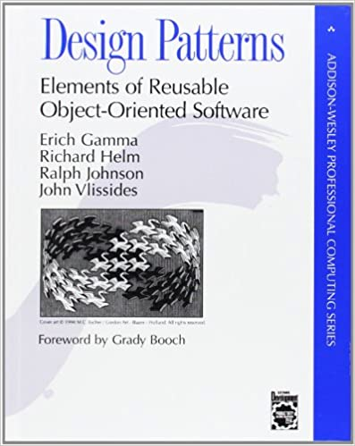

Design Patterns
Contents:
Design Patterns
Case Study
Version One
Refactor for clarity
Version Two
Refactor for adaptability
Version Three
Abstractions
Version 4
Demos
Design Patterns
»
Welcome to ObjectVille!
View page source
Welcome to ObjectVille!
The city where design patterns are part of daily life.

Contents:
Design Patterns
Reasons to consider Design Patterns
Case Study
Project Workflow
Valid record format
Version One
TradeRecord class
TradeProcessor class
Refactor for clarity
read_records()
parse_records()
store_records()
validate_trade_data()
map_record_to_object()
Version Two
Refactor for adaptability
Logger class
Reader class
Validator class
Mapper class
Parser class
Repository class
Version Three
Abstractions
Parser abstraction
Mapper Abstraction
Logger Abstraction
Validator Abstraction
Repository Abstraction
Postgres Repository
TextFile Repository
Reader Abstraction
Version 4
Demos
Indices and tables
Index
Module Index
Search Page